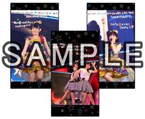

2016.03.12
2016.03.12


ゆいかおりライブグッズ通信販売決定！
下記公演のグッズ販売に関しまして、お客様から沢山のお問い合わせを頂き
通信販売を行うことが決定いたしました。
・ゆいかおりLIVE TOUR「RAINBOW CANARY!!」
・ゆいかおりLIVE「RAINBOW CANARY!!」〜Brightest Stage〜
通信販売の受付開始日等、詳細は未定となっておりますので
後日、本公式サイトにて改めて発表させて頂きます。
 2016.03.12
2016.03.12
下記公演のグッズ販売に関しまして、お客様から沢山のお問い合わせを頂き
通信販売を行うことが決定いたしました。
・ゆいかおりLIVE TOUR「RAINBOW CANARY!!」
・ゆいかおりLIVE「RAINBOW CANARY!!」〜Brightest Stage〜
通信販売の受付開始日等、詳細は未定となっておりますので
後日、本公式サイトにて改めて発表させて頂きます。
2015.12.21
小倉唯が「アム」役として出演する、
2016年3月10日発売予定の「サモンナイト6 失われた境界たち」の
主題歌を担当することが決定しました！
また、主題歌「TO BE ALIVE」を使用したプロモーション映像が
バンダイナムコエンターテインメント公式Youtubeチャンネルで公開中です！！
・バンダイナムコエンターテインメント公式YouTubeチャンネル
https://www.youtube.com/user/nbgi
・「サモンナイト6」公式HP
http://www.summonnight.net/sn6/
2015.10.29
携帯・スマホサイト「animelo mix」にて
ゆいかおり3rdアルバム「Bright Canary」収録曲
「カナリア」の着うた(R)・シングル先行配信がスタートしました！
Android・iPhone端末でシングルをダウンロードした方の中から
抽選で100名様に「animelo限定ポストカード」プレゼントキャンペーンも実施中！
応募は、11月10日まで。ご応募お忘れなく！
詳しくは下記配信サイトをご覧下さい。
http://r.animelo.jp/m800IIX1

2015.09.28
先日キングレコードオフィシャル通販サイト内特設サイトにて予約販売をさせていただきました
小倉 唯 1st LIVE「HAPPY JAM」ライブグッズのお届け予定日が決定いたしました。
お客様への商品お届け予定日：2015年10月10日（土）
商品お届けまで今しばらくお待ちください。
2015.07.10
小倉 唯 1st LIVE「HAPPY JAM」ライブグッズ通信販売に関しまして
下記のサイトおよび期間で予約販売を実施いたします。
【キングレコードオフィシャル通販サイト内特設サイト】
[PC・スマホ（共通）]
http://kingeshop.jp/shop/contents1/ogura-yui.aspx
【予約販売期間】
2015年7月13日（月）正午〜 2015年7月27日（月）午前11時59分まで
〜 ご購入にあたっての注意事項 〜
【お支払い方法について】
■クレジット決済
VISA、MASTER、JCB、DC、UFJニコス、クレディセゾン、アメックスをご利用頂けます。
■コンビニ前払い
※コンビニ前払いをご指定頂きますと、ご注文日より7日以内でのお支払いとなります。
※コンビニ前払いの際、各コンビニ一律185円手数料として頂いております。予めご了承ください。
【配送について】
こちらの商品のお届けは10月上旬頃を予定しております。
※商品の配達は佐川急便でのお届けとなり、送料￥432（税込）になります。
※商品代金￥3,000（税抜）以上お買い上げ頂きますと送料無料となります。
【ご注文について】
小倉 唯 1st LIVE「HAPPY JAM」ライブグッズは受注予約商品のため
その他の商品とのご注文はできませんのでご了承ください。
※ご注文後のキャンセルはお受けできませんので予めご了承ください。
※メールアドレス（＠kingrecords.co.jp）を受信できるよう予め設定をお願いいたします。
※「Strawberry JAM」の取扱はございませんのでご了承ください。
2015.07.01
ゆいかおり(小倉 唯＆石原夏織)スタッフ公式Twitterのフォロワーが10,000人を突破いたしました！！
10,000フォロー突破記念として、
ゆいかおり＆小倉 唯 公式サイトの“ウェブクリップアイコン”の配布が決定！
ご自身のスマートフォンのホーム画面に、
公式サイトのウェブクリップアイコンを登録しちゃいましょう☆
【Android：標準ブラウザの場合】
1. 各公式サイトのTOPページを開く
★ゆいかおり 公式サイト http://www.yuikaori.info/
★小倉 唯 公式サイト http://www.ogurayui.jp/
2. 公式サイトをブックマークに追加する
3. ブックマークに表示された公式サイトを長押しして、メニューを表示する
4. 『ショートカットを作成』を選択する
5. ホーム画面に公式サイトのアイコンが追加される
【iPhone：Safariの場合】
1. 公式サイトのTOPページを開く
★ゆいかおり 公式サイト http://www.yuikaori.info/
★小倉 唯 公式サイト http://www.ogurayui.jp/
2. 『アクション』アイコン（画面下にある□に↑が付いているボタン)を選択する
3. 『ホーム画面に追加』を押す
4. ホーム画面に公式サイトのアイコンが追加される
登録されたアイコンを押すと、各公式サイトがすぐに表示されちゃいます！
皆さん、ぜひご登録ください♪
2015.06.03
ゆいかおり(小倉 唯＆石原夏織)スタッフの公式Twitterが、本日よりスタートしました！
ゆいかおりの情報はもちろん、唯ちゃん＆夏織ちゃんの最新情報を発信していきますよ♪
皆さん、ぜひフォローしてくださいね☆
●Twitterアカウント
@YUIKAORI_STAFF
2015.05.25
『Animelo Summer Live 2015 -THE GATE-』のテーマソング、
「ハジマレ, THE GATE!!」のミュージックビデオが公開！
参加アーティスト：
i☆Ris/angela/井口裕香/今井麻美/内田彩/内田真礼/小野賢章/GRANRODEO/黒崎真音/昆夏美/ZAQ/
鈴木このみ/TRUSTRICK/Pile/春奈るな/ミルキィホームズ/ゆいかおり 他
2015.05.07
ゆいかおり、小倉唯もレコーディングに参加している
「ハジマレ, THE GATE!!」（Animelo Summer Live 2015 -THE GATE- テーマソング/作詞：畑亜貴 作編曲：渡辺和紀）の着うた/フルが
スマートフォンサイト「animelo mix」、携帯サイト「アニメロミックス」、「アニメロ★うた」「超！アニメロ」にて
5/13(水)から配信されます！
詳細はこちら！
http://r.animelo.jp/u000C6A0
2015.04.13
LIVE DAM STADIUMにて、昨年行われた「Animelo Summer Live 2014 -ONENESS-」の中から
『PUPPY LOVE!!～Intro Situation』が「LIVEカラオケ」として4月16日（木）より配信開始されます。
記念すべき第10回を迎えた世界最大級のアニソンライブ「アニサマ2014」で繰り広げられた数々のステージがカラオケルームに蘇ります。
楽曲は順次追加されていく予定です。お楽しみに！
アニサマ公式ホームページ：http://anisama.tv/
2015.03.20
ニコニコ動画にて小倉 唯チャンネルが開設されました！
MUSIC VIDEOや楽曲の試聴動画など内容盛りだくさんなチャンネルです！
WEB限定の「Happy Strawberry」MUSIC VIDEO(Dance ver.)も公開中！
小倉 唯チャンネル
http://ch.nicovideo.jp/kingrecords-3rd
2015.03.19
携帯・スマホサイト「animelo mix」にて
小倉唯1stアルバム「Strawberry JAM」収録曲
「Happy Strawberry」の着うた(R)・シングル先行配信がスタートしました！
Android・iPhone端末でシングルをダウンロードし、応募した方の中から抽選で100名様に
「animelo限定ポストカード」をプレゼントしちゃうキャンペーンも実施中！
応募は、4月7日まで。ご応募お忘れなく！
詳しくは下記配信サイトをご覧下さい。
携帯・スマホサイト「animelo mix」
http://r.animelo.jp/iCG8S7uX
2015.01.16
携帯・Androidサイト「animelo mix」にてゆいかおりLIVE TOUR「HEARTY PARTY!!」ライブショット壁紙の配信がスタート!

【価格】各64pt（※1pt=1円）
【対応端末】 フィーチャーフォン・Android（※iPhone非対応）
ライブ来場ありがとうボイス＆幕張公演終了後のコメントムービーも配信中！
animelo mix「ゆいかおり応援団」へのアクセスはこちら↓

2014.12.19
携帯・スマホサイト「animelo mix」で
「NEO SIGNALIFE」の着うた(R)先行配信を開始しました！
詳しくは下記配信サイトをご覧ください。
携帯・スマホサイト「animelo mix」はこちら
http://r.animelo.jp/m800IIX1
2014.12.12
先日お知らせいたしました、ゆいかおりLIVE TOUR「HEARTY PARTY!!」ライブグッズ
通信販売に関しまして、下記のサイトおよび期間で予約販売させていただきます。
【キングレコードオフィシャル通販サイト内特設サイト】
http://kingeshop.jp/shop/contents2/yuikaori-goods.aspx
予約販売期間：2014年12月15日（月）正午～ 2015年1月5日（月）午前11時59分まで
～ ご購入にあたっての注意事項 ～
■商品は期間限定の予約商品となります。
■商品のお届けは4月上旬頃を予定しております。
お届け日が確定次第、サイトもしくはメールにてお知らせいたします。
■お支払いは“コンビニ決済”又は“クレジット決済”のみのお取り扱いとなりますので予めご了承ください。
■コンビニ決済をご指定いただきますと、ご注文日より7日以内でのお支払いとなります。
■ご注文後のキャンセルはお受けできませんので予めご了承ください。
■今回の“ゆいかおりLIVE TOUR「HEARTY PARTY!!」ライブグッズ”は受注予約商品のため
その他の商品と一緒にご注文はできません。
■商品代金￥3,000(税抜)以上お買い上げいただきますと送料無料となります。
■ドメイン指定受信を設定している携帯端末のメールアドレスを登録されるお客様は
メール（＠kingrecords.co.jp）を受信できるようご注文前に設定をお願いいたします。
2014.12.08
携帯・スマホサイト「animelo mix」にてゆいかおりLIVE TOUR「HEARTY PARTY!!」全公演のセットリストを公開！
また、セットリスト掲載曲の中から着うたフル(R)・シングルいずれか3曲を購入すると、
抽選で5名様に直筆サイン入りライブグッズをプレゼント！
【応募期間期間】
12月8日(月) ～ 12月15日(月)
【対応端末】
フィーチャーフォン・Android・iPhone
ライブ来場ありがとうボイスも配信中！
animelo mix「ゆいかおり応援団」へのアクセスはこちら↓
2014.07.25
携帯・スマホサイト「animelo mix」で
「Tinkling Smile」着うた(R)独占先行配信がスタートしました！
ダウンロードしていただいた方全員に特製壁紙をプレゼント!
詳しくは下記配信サイトをご覧ください。
携帯・スマホサイト「animelo mix」
http://r.animelo.jp/j50WOlN1

2014.06.13
携帯・スマホサイト「animelo mix」で
「Intro Situation」の着うた(R)先行配信を開始しました！
詳しくは下記配信サイトをご覧ください。
携帯・スマホサイト「animelo mix」はこちら
http://r.animelo.jp/m800IIX1
2014.04.14
小倉唯の高校卒業記念写真集「yui memory」が6月5日に発売決定しました！
小倉唯写真集「yui memory」
【発売日】2014年6月5日
【価格】￥3,000(＋税)
【出版社】(株)学研パブリッシング
詳しくは下記特設ページにてご確認ください。
http://www.e-animedia.net/archives/38187833.html
2014.03.21
携帯・スマホサイト「animelo mix」で
「LUCKY DUCKY!!」の着うた(R)先行配信を開始しました！
詳しくは下記配信サイトをご覧ください。
携帯・スマホサイト「animelo mix」はこちら
http://r.animelo.jp/q800HQB1